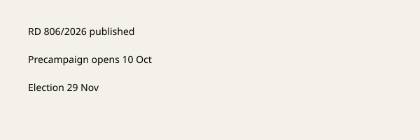

España · Elecciones · 10 de octubre de 2026
Sánchez y Feijóo abrieron la precampaña del 29 de noviembre

Lo que está acordado entre las redacciones
El Real Decreto 806/2026, publicado en el BOE, disolvió las Cortes Generales elegidas el 23 de julio de 2023 y convocó elecciones generales para el 29 de noviembre de 2026. Este sábado 10 de octubre, Pedro Sánchez intervino en Dos Hermanas (Sevilla) y Alberto Núñez Feijóo en Madrid. Ambos actos forman parte del inicio de la precampaña. Las formaciones de izquierda exploran coaliciones al Senado; ERC y EH Bildu han anunciado que reeditarán su coalición. El Gobierno no ha publicado un texto de indulto al exfiscal general Álvaro García Ortiz.
Lo que es solo cita
Frases como “reconstrucción nacional”, “el lobo son ellos” o referencias a “la mafia” son declaraciones de campaña. No constituyen hechos jurídicos ni sentencias. Las encuestas mencionadas en algunos medios no se detallan aquí porque no son el objeto de la convocatoria electoral, que es un acto del Gobierno mediante decreto real.
Mecanismo e historia
La disolución anticipada de las Cortes está prevista en la Constitución. El decreto de disolución entra en vigor el día de su publicación. La campaña electoral oficial tiene plazos legales; la precampaña es el periodo previo en el que los partidos organizan actos. El Senado se elige por un sistema distinto al Congreso. Las listas conjuntas o coaliciones requieren acuerdos formales que se publican en el BOE cuando se presentan. La vivienda y los decretos-ley anteriores siguen en el debate político, pero su validación o derogación dependerá del resultado electoral y de la nueva composición de las Cámaras.
Lo que la historia no es
No es el resultado electoral. No es la composición definitiva de las listas. No es un pronunciamiento judicial sobre posibles indultos. La imagen es la fachada del complejo de la Moncloa, no el escenario de ningún acto de este fin de semana.

Artículos fuente y puntuaciones
| Medio | Titular | T | N | C |
|---|---|---|---|---|
| El Español | Feijóo promete una "reconstrucción nacional" | 88 | +15 | 70 |
| El Independiente | Sánchez arranca la campaña en Dos Hermanas | 86 | -8 | 75 |
| COPE | El PP y el PSOE inician la precampaña | 90 | 0 | 85 |